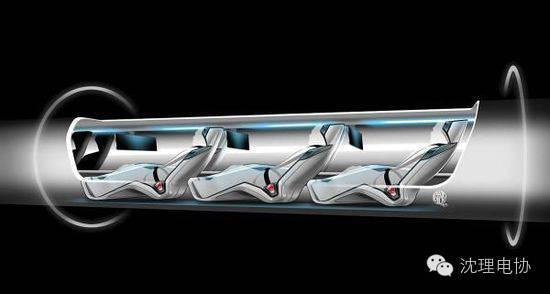

据《财富》网络版报道，超级高铁初创公司Hyperloop One当地时间周三在内华达沙漠公开演示了其推进系统原型。
在测试中，Hyperloop One的推进系统将轨道上的一辆铝制滑车加速到每小时116英里（187公里）。滑车运行1000米之后撞到沙堆上停了下来。滑车加速到60英里（约96.6公里）/小时只花了1.1秒。整个测试过程持续了大约2秒钟。此次推进系统测试位于拉斯维加斯北边的内华达沙漠。如果按照最终设想，超级高铁将在密闭真空管道或低压管道中行驶，时速最高可达760英里(约合1230公里/小时)。不过Hyperloop One的首席执行官罗布·劳埃德（Rob Lloyd） 表示，全面的测试需要等到2016年年底进行。
“这次主要是测试硬件和系统，我们现在的目标就是在两秒内加速到400英里每小时，在今年年底，我们希望进行完整的测试，利用我们的加速管道。”Hyperloop One的联合创始人兼首席科技官布罗甘·巴姆布罗甘(Brogan BamBrogan)透露。SpaceX和特斯拉首席执行官伊隆·马斯克（Elon Musk）于2013年首先提出了超级高铁（hyperloop）的概念，超级高铁列车能在低压管道内以760英里时速行驶。马斯克对外公布了超级高铁的基本技术计划，并邀请其他厂商开发相关技术，Hyperloop One和Hyperloop Transportation Technologies（以下简称“HTT”）是首批开发超级高铁技术的两家公司。Hyperloop One将于今年底建成更完整的超级高铁系统。超级高铁的创始人兼首席执行官Brogan BamBrogan表示：“更完整的超级高铁系统将在在2秒内加速至400英里/小时（约643公里）。”建设完成的超级高铁系统将是一个架设在高架轨道上的封闭管道，减少了列车行进时遇到的空气阻力，悬浮在轨道上方的超级高铁列车将达到非常快的速度。超级高铁从旧金山行驶到洛杉矶只需约35分钟。除了Hyperloop One，由美国国家航空航天局和波音公司员工组建的众筹公司Hyperloop Transportation Technologies同样也在进行超级高铁的研究。该公司在5月9日宣称，已经获准在其原型系统中使用被动磁悬浮技术。